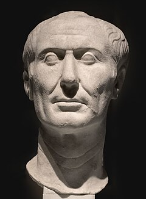

Gaius Julius Caesar (12 July 100 BC – 15 March 44 BC) was a Roman general and statesman. A member of the First Triumvirate, Caesar led the Roman armies in the Gallic Wars before defeating his political rival Pompey in a civil war, and subsequently became dictator from 49 BC until his assassination in 44 BC. He played a critical role in the events that led to the demise of the Roman Republic and the rise of the Roman Empire.
source: Wikipedia
Image

The Tusculum portrait, possibly the only surviving sculpture of Caesar made during his lifetime